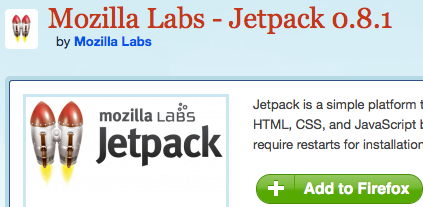

JSがまともに書けない
HTMLコーダーが
Jetpackを
ふわっと紹介します
Twitter:hiloki(inkdesign)
Jetpackはなんぞや
https://jetpack.mozillalabs.com/
HTML/CSS/JavaScriptでFirefoxの拡張機能を
開発できるプラットフォーム

JetpackそのものもFirefoxのアドオンとして提供されていて、
ブラウザ上で開発ができる
Jetpackの開発キットは今２つある（というのを昨日知りました）
- Jetpack prototype(0.8)
- 今回紹介するブラウザ上でごにょごにょできる方
- Jetpack SDK(0.1) 2010/03/10 リリース
- びっくりするくらい状況が把握できておりません ＼（＾O＾）／
prototypeの方でできる範囲は限られているけど、本格的に運用環境へと移行してもっと複雑なこともできるようになるみたい
（prototypeの開発環境もこのSDKで利用できるように改良していくとのこと）
まぁSDKはさておき
prototypeでのお話
アドオンとしてJetpackをインストール後、
about:jetpack を叩けば
開発ページへと移動。
/* ここから実際のデモ */
デモ
んで作ったのはどう使うのか（配布方法）
下記のように、<link rel="jetpack" href="xxx.js"/>なHTMLを用意する
<html>
<head>
<title>My First Jetpack</title>
<link rel="jetpack" href="my-first-jetpack.js"/>
</head>
<body>This is my first Jetpack!</body>
</html>こうするとJetpack Feature（Jetpackで開発したアドオン）の
インストールを促すメッセージが出ます
※ユーザーもJetpackのインストールが必要
まとめ
Greasemonkeyでええんちゃう？
とかいわずに、今後JetpackベースでFirefox拡張機能ができるってことで Jetpackにも触れてみてはどうでしょーか。
ご清聴ありがとうございました
The Rocketeer by Daniel Krall